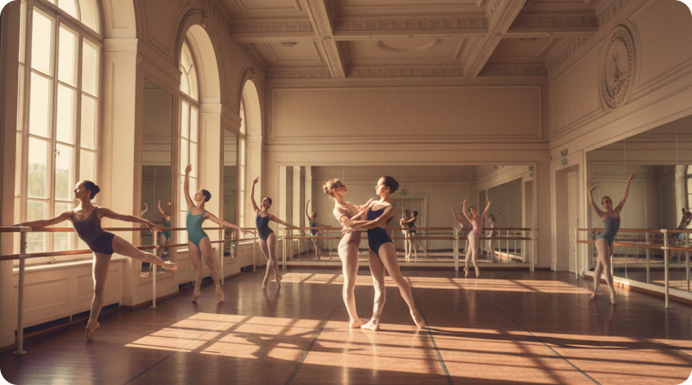
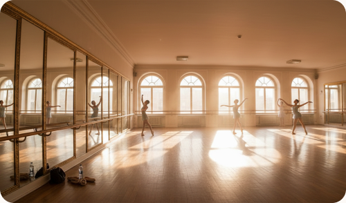
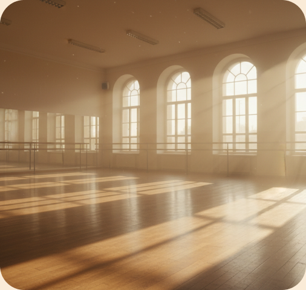
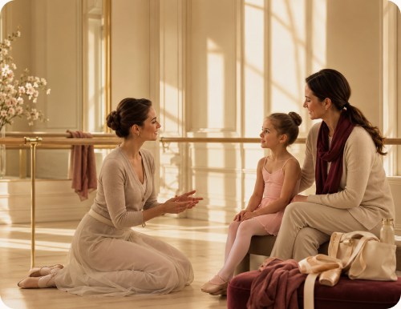

Будущим абитуриентам
Для тех, кто планирует поступать в колледж и хочет заранее подготовиться к вступительному этапу.
Подготовка к поступлению в колледж хореографического искусства для абитуриентов, которые хотят увереннее пройти вступительные испытания.
Подготовительное отделение помогает будущим абитуриентам развить хореографическую базу, физические данные, координацию, музыкальность и уверенность перед просмотром или экзаменами.
Занятия подойдут тем, кто планирует поступление на программы «Искусство балета» или «Искусство танца».
Подготовительное отделение создано для детей и подростков, которые хотят поступить в колледж, но нуждаются в дополнительной подготовке перед вступительными испытаниями.
Занятия помогают понять требования колледжа, укрепить базу и подготовиться к просмотру более спокойно и системно.
Для тех, кто планирует поступать в колледж и хочет заранее подготовиться к вступительному этапу.
Для детей, которые уже занимаются танцем, но хотят усилить технику, данные и уверенность.
Для абитуриентов, которым нужно восстановить форму и вернуться к регулярной нагрузке.
Для семей, которые хотят понять уровень ребёнка и получить рекомендации перед поступлением.
Постановка корпуса, работа у станка, базовые позиции, координация и чистота исполнения.
Пластика, свобода движения, выразительность и работа с телом в современных хореографических формах.
Развитие гибкости, силы, выносливости, подвижности и безопасной работы с нагрузкой.
Развитие чувства ритма, внимания к музыке, точности движения и выразительности.
Разбор формата вступительного этапа, работа над собранностью и уверенностью.
Педагог подсказывает, какие стороны нужно усилить перед поступлением.
Регулярная подготовка помогает абитуриенту лучше понять свои возможности, увидеть зоны роста и подойти к вступительным испытаниям более уверенно.

Ученик укрепляет хореографическую базу и лучше понимает требования к исполнению.
Развиваются гибкость, сила, координация, выносливость и устойчивость корпуса.
Абитуриент учится слышать ритм, двигаться в темпе и точнее реагировать на музыку.
Занятия помогают спокойнее чувствовать себя на просмотре и не теряться перед комиссией.
Подготовка формирует регулярность, внимание и готовность к учебной нагрузке.
Абитуриент заранее знакомится с форматом поступления и образовательной средой колледжа.
Мягко включаем мышцы, суставы и готовим тело к хореографической нагрузке.
Разбираем базовые элементы, постановку корпуса, координацию и качество движения.

Укрепляем тело, развиваем гибкость, силу, выносливость и устойчивость
Развиваем музыкальность, артистичность и умение показать себя в движении.
Педагог даёт рекомендации и подсказывает, над чем работать дальше.

Педагог народно-сценического танца

Педагог классического танца

Педагог классического танца средних классов

Педагог классического танца
Педагог народно-сценического танца

Подготовительное отделение не заменяет вступительные испытания, но помогает абитуриенту лучше понять формат отбора и подготовиться к нему.
На занятиях педагог смотрит уровень подготовки, физические данные, музыкальность, координацию и способность воспринимать задания. После этого абитуриент и родители получают рекомендации.
Что оценивается
Поступление в хореографический колледж — важный шаг для ребёнка и семьи. Чем раньше абитуриент знакомится с требованиями, педагогами и форматом обучения, тем спокойнее проходит вступительный этап.
Абитуриент заранее понимает, что будет важно на просмотре.
Регулярные занятия помогают спокойнее чувствовать себя перед комиссией.
Педагог помогает отследить сильные стороны и зоны роста.
Семья лучше понимает, подходит ли ребёнку профессиональный хореографический маршрут.
Да, мы принимаем учеников любого уровня подготовки. У нас есть группы для начинающих как для детей, так и для взрослых. Педагоги подбирают нагрузку индивидуально.
Да, подготовительное отделение помогает определить текущий уровень.
Педагог подберёт подходящую нагрузку и формат занятий.
Требования зависят от выбранной образовательной программы.
Расписание вступительных испытаний публикуется заранее.
Записаться можно через форму ниже.
Мы свяжемся с вами и ответим на вопросы.

Занятия по направлению «Название услуги» помогают развивать осанку, гибкость, координацию, силу, музыкальность и уверенность в движении. Программа подбирается с учётом возраста, уровня подготовки и цели ученика.
Обучение проходит в комфортном темпе под руководством педагогов ГРАНДБАЛЕТ. На занятиях ученики постепенно осваивают базовые элементы, укрепляют тело, развивают выразительность и учатся работать с музыкой.
Этот блок можно редактировать через админ-панель и использовать для SEO-текста на страницах услуг.

Поможем подобрать направление, школу и комфортную группу по возрасту и уровню подготовки